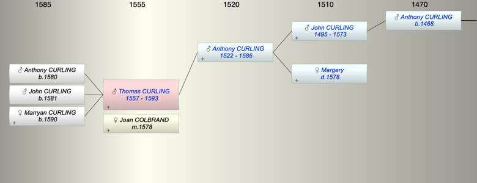

| [Index] |
| Thomas CURLING (1557 - 1593) |
|  |
| b. abt 1557 |
| m. 13 Oct 1578 Joan COLBRAND at St Laurence |
| d. 1593 aged 36 |
| Parents: |
| Anthony CURLING (1522 - 1586) |
| Siblings (5): |
| Joan CURLING (1555 - ) |
| John CURLING (1559 - 1611) |
| Margery CURLING (1561 - ) |
| Anthony CURLING (1562 - ) |
| Rabidge CURLING (1565 - ) |
| Children (3): |
| Anthony CURLING (1580 - ) |
| John CURLING (1581 - ) |
| Marryan CURLING (1590 - ) |
| Events in Thomas CURLING (1557 - 1593)'s life | |||||
| Date | Age | Event | Place | Notes | Src |
| abt 1557 | Thomas CURLING was born | ||||
| 13 Oct 1578 | 21 | Married Joan COLBRAND | St Laurence | ex FMP PR | |
| 1580 | 23 | Birth of son Anthony CURLING | Note 1 | ||
| 1581 | 24 | Birth of son John CURLING | Note 2 | ||
| 1586 | 29 | Death of father Anthony CURLING (aged 64) | St Laurence | Note 3 | |
| 1590 | 33 | Birth of daughter Marryan CURLING | Note 4 | ||
| 1593 | 36 | Thomas CURLING died | Note 5 | ||
| Personal Notes: |
|
Will of Thomas Curling made 8th October 1593, proved 3rd December 1593, ex FSC, TNA Kew.
Made 1593 Thomas Curling of St Laurence. yeoman refers to: - Joan Sander his sister's daughter, - Joan his wife and executor, - his brother Anthony and kinsman John Curling overseers. - land and tenaments in St Laurence and St Peter to his wife Joan, - Marryan his daughter not of full age, - Anthony eldest son of his brother Anthony and Thomas' godson, - his sisters Coppen and Knowler Witness Anthony Curling, John Curling, Richard Norwood and Richard Culmer? Likely marriages (all ex FMP PR): Thomas Curling to Joan Colbrand at St L 13 Oct 1578 his sisters Joan Curling to William Sander at St L 12 Oct 1578 (the day before) Margery Curling to Abdias Coppin at St L 20 Nov 1587 Rabidge Curling to William Knowler at St L 20 Nov 1587 |
| Created on a Mac™ using iFamily for Mac™ on 8 Oct 2023 |